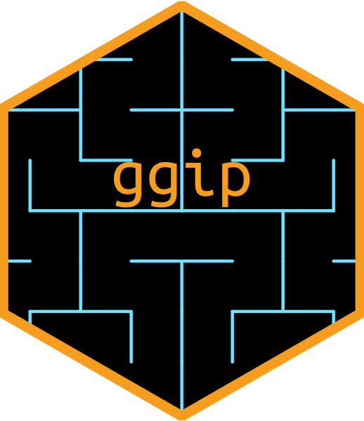
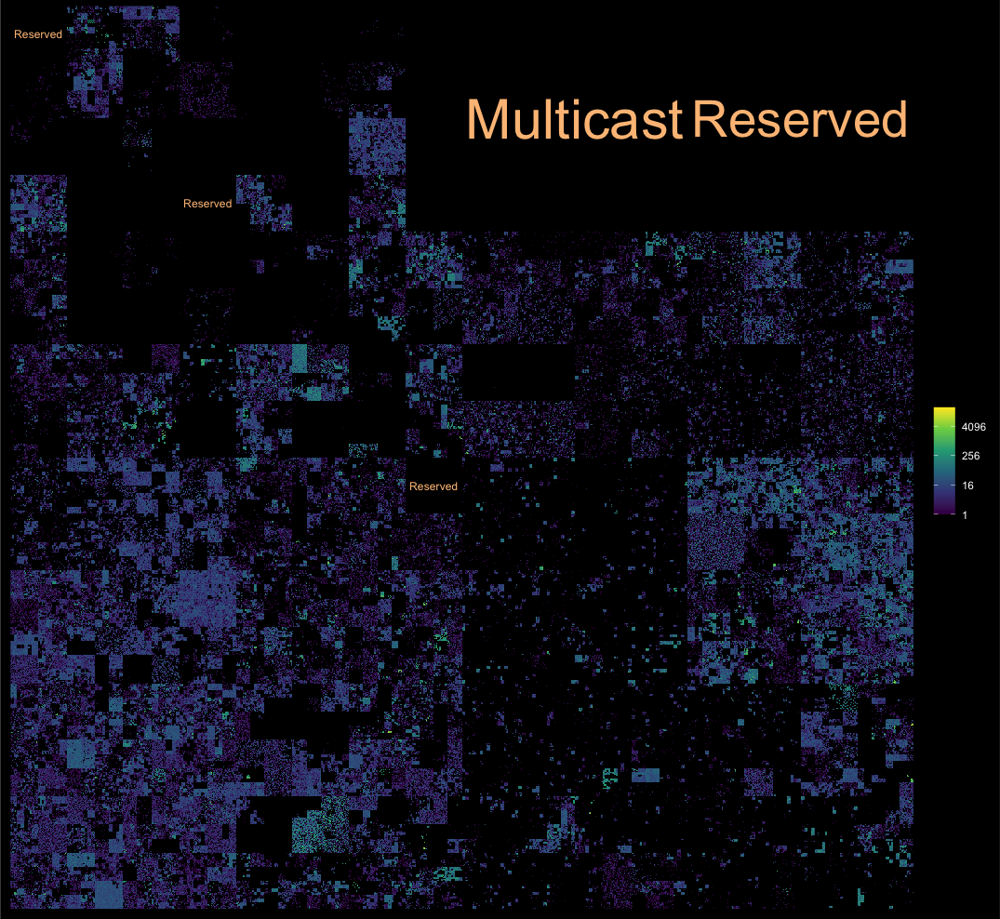

ggip 
ggip is a {ggplot2} extension for visualizing IP addresses and networks stored in {ipaddress} vectors.
Here are some of the key features:
- IP data mapped to 2D plane by a unified coordinate system
- Compatible with existing ggplot2 layers
- Custom IP-specific layers for common use cases
- Full support for both IPv4 and IPv6 address spaces
Installation
You can install the released version of ggip from CRAN with:
install.packages("ggip")Or you can install the development version from GitHub:
# install.packages("remotes")
remotes::install_github("davidchall/ggip")Usage
Plotting with {ggip} follows most of the conventions set by {ggplot2}. A major difference is that coord_ip() is required to map IP data to the 2D grid (addresses to points and networks to rectangles). Learn more in vignette("ggip").
Here’s a quick showcase of what’s possible:
library(tidyverse)
library(ggfittext)
library(ggip)
ggplot(ip_data) +
stat_summary_address(aes(ip = address)) +
geom_hilbert_outline(color = "grey80") +
geom_fit_text(
aes(
xmin = network$xmin, xmax = network$xmax,
ymin = network$ymin, ymax = network$ymax,
label = label
),
data = iana_ipv4 %>% filter(allocation == "Reserved"),
color = "#fdc086", grow = TRUE
) +
scale_fill_viridis_c(name = NULL, trans = "log2", na.value = "black") +
coord_ip(pixel_prefix = 20) +
theme_ip_dark()
#> Warning: Transformation introduced infinite values in discrete y-axis